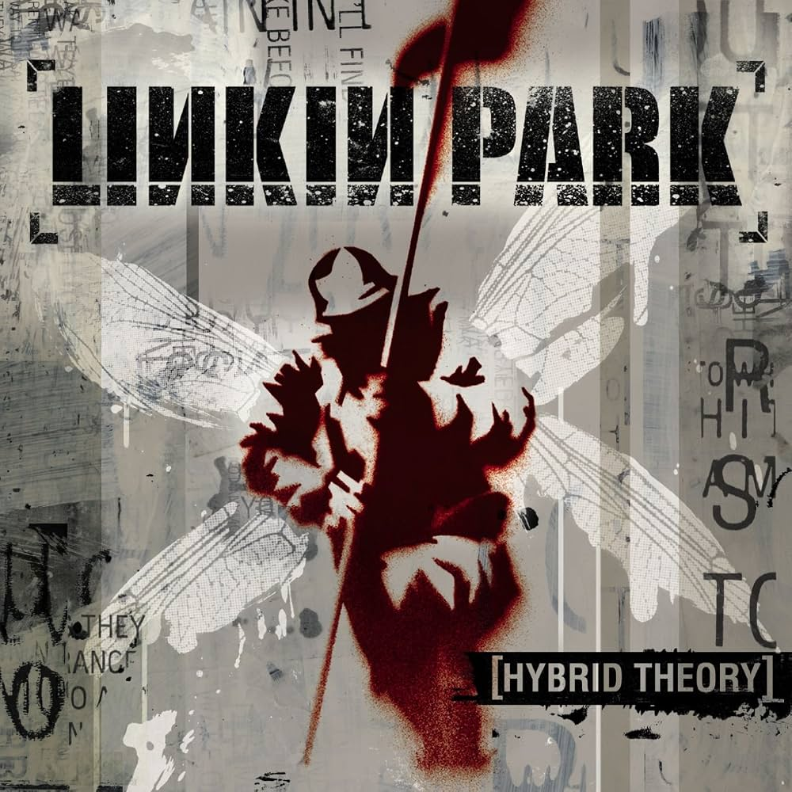
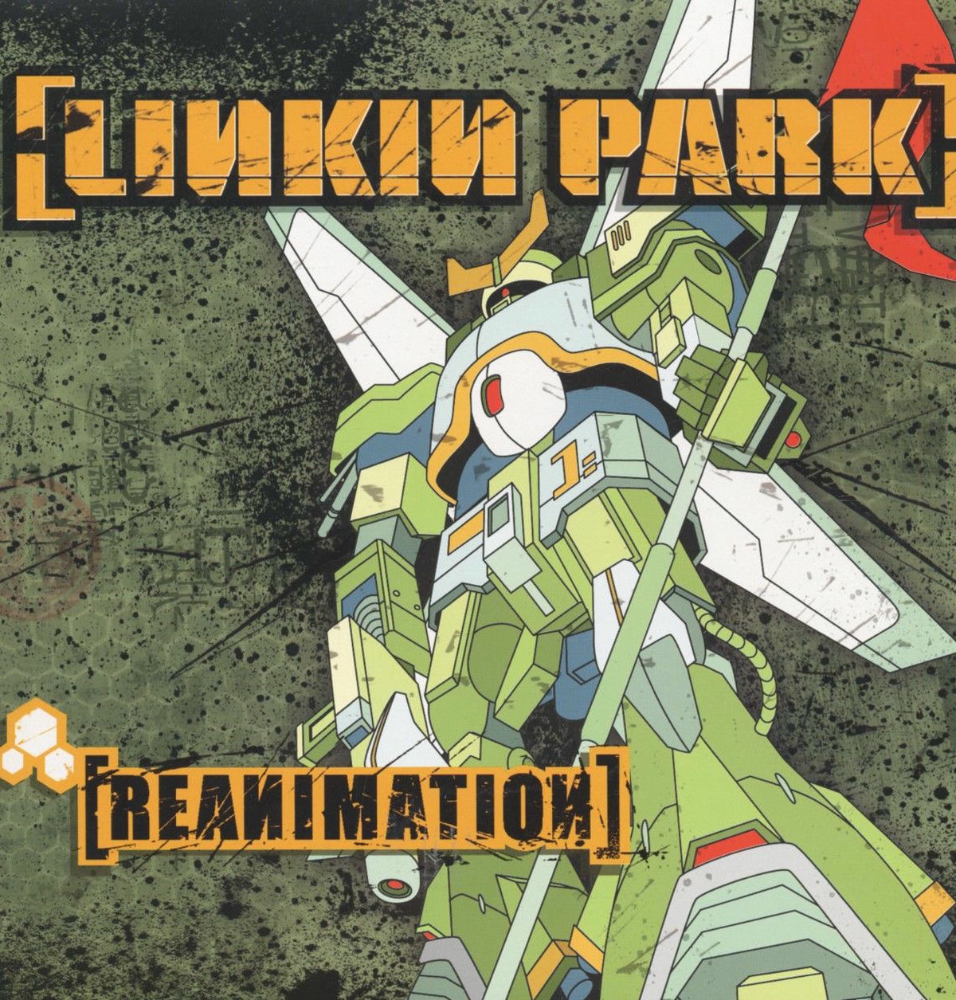

Top personal.
En esta página encontrarás mi top (personal) de álbumes de Linkin Park
Ver álbumesALinkin Park es una banda estadounidense de rock que en sus inicios se caracterizó por su sonido de nu metal y rap metal. Fue fundada en 1996 en Agoura Hills, California, y está integrada por el vocalista, compositor y guitarrista rítmico Mike Shinoda, el bajista Dave Farrell, el DJ Joe Hahn el guitarrista principal Brad Delson, el baterista Colin Brittain y la vocalista Emily Armstrong, quien ingresó al grupo en 2024 tras el fallecimiento de Chester Bennington en 2017. Brittain también se unió en ese año como reemplazo de Rob Bourdon.
El álbum principal de Linkin Park, el más vendido y el más aclamado de todos, sin mencionar un debut impecable como banda.

Es el álbum debut de Linkin Park, publicado el 24 de octubre de 2000
por Warner Bros. Records.
Fuente
Chester Bennington · Mike Shinoda · Brad Delson · Dave Farrell · Joe Hahn · Rob Bourdon
El álbum Hybrid Theory de Linkin Park ha vendido más de 32 millones de copias a nivel mundial.
Vino 2 años después de Hybrid Theory, se trata de un estilo más mezclado y más detallado del mismo.
Contando con participación de artistas externos a la banda en varias de sus pistas.

Fue publicado el 30 de julio de 2002 por Warner Bros. Records.
Fuente
Chester Bennington · Mike Shinoda · Brad Delson · Dave Farrell · Joe Hahn · Rob Bourdon
Es uno de los álbumes de remezclas más vendidos de todos los tiempos con millones de copias globales.
Mis gustos se basan en cosas como le instrumental, las liricas y su significado.Tambien cosas como la portada y como es caracterizada.